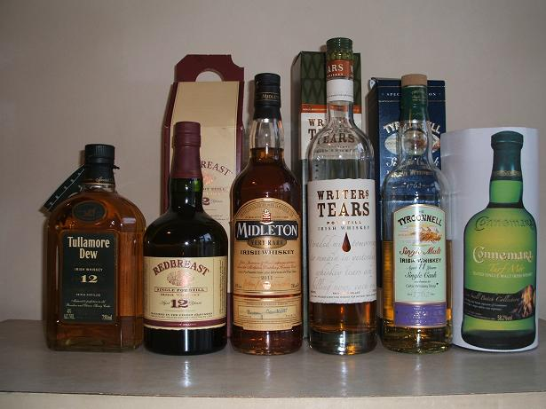

Many IWS members know me as a whiskey lover, but You may not know that my great love, apart from whiskey is Harley Davidson.
This year, with Harleys Gaelic Chapter, i am taking part in a Rideout for Prems, a 4 day riding around Ireland, visiting hospitals and delivering very much needed equipment for premature babies.
You can find out more about what we will do here; http://irishprematurebabies.com/index.p ... &Itemid=99
and everything else you need to know about the charity is on that website.
This is a 100% voluntarily charity, and all the money we will raise will go to where it is needed, and no one taking hidden cuts.
To help raise funds for this event, I will host a very special whiskey evening at the Against The Grain bar on Dublin's Wexford Street on Thursday 5th April at 8pm. This will be an informal event, where attendees will be encouraged to mix, chat, compare notes and generally enjoy a night of whiskey, banter and fun. And Against The Grain stocks hundreds of craft beers and whiskeys for those who want to extend the night even further.
Suggested admission is 30 euro per person, but remember this event is in aid of a great cause, so feel free to contribute more if you can. You can reserve your place at this special whiskey evening by emailing me directly at zoltan dot vari at irishwhiskeysociety dot com, or reply to this topic or simply adding your name to the list of those attending on Facebook at www.facebook.com/events/201228709984433/.
The tasting will be followed by a charity auction of some very special collectable bottles, with all proceeds going to a very worthy cause.
NOTE: This forum is no longer active. This is an archive copy of the forum as it was on 10 March 2018.
Charity Whiskey Tasting for Premature Babies
4 posts
• Page 1 of 1
Charity Whiskey Tasting for Premature Babies
 by varizoltan » Mon Apr 02, 2012 4:48 pm
by varizoltan » Mon Apr 02, 2012 4:48 pm
Happiness is having a rare steak,a bottle of whiskey, and a dog to eat the rare steak!!!
-

varizoltan - Fully mature Cask
- Posts: 1023
- Joined: Fri Mar 20, 2009 11:03 pm
- Location: Hungary
Re: Charity Whiskey Tasting for Premature Babies
 by IrishWhiskeyChaser » Mon Apr 02, 2012 5:14 pm
by IrishWhiskeyChaser » Mon Apr 02, 2012 5:14 pm
Good stuff Zoltan hope the night goes very well for you.
If everything goes to plan I'll try to make it to the Auction.
If everything goes to plan I'll try to make it to the Auction.
Sláinte Adrian
- IrishWhiskeyChaser
- Site Admin
- Posts: 2910
- Joined: Tue Mar 17, 2009 1:37 pm
- Location: A Dark Dunnage somewhere in Galway
Re: Charity Whiskey Tasting for Premature Babies
 by varizoltan » Mon Apr 02, 2012 5:19 pm
by varizoltan » Mon Apr 02, 2012 5:19 pm
Just to water your mouths... 
here is what we will taste on the night;
Writers Tears
Tullamore Dew 12
Redbreast 12
Midleton very rare 2011
Tyrconnell 11, single cask for Celtic Whiskey Shop
Connemara Turf Mor
I would like to say thanks a BIG THANKS for IDL, Tullamore Dew, Hot Irishman, Cooley, and the Celtic Whiskey Shop, for giving me all the whiskeys for free
here is what we will taste on the night;
Writers Tears
Tullamore Dew 12
Redbreast 12
Midleton very rare 2011
Tyrconnell 11, single cask for Celtic Whiskey Shop
Connemara Turf Mor
I would like to say thanks a BIG THANKS for IDL, Tullamore Dew, Hot Irishman, Cooley, and the Celtic Whiskey Shop, for giving me all the whiskeys for free
Happiness is having a rare steak,a bottle of whiskey, and a dog to eat the rare steak!!!
-
varizoltan - Fully mature Cask
- Posts: 1023
- Joined: Fri Mar 20, 2009 11:03 pm
- Location: Hungary
Re: Charity Whiskey Tasting for Premature Babies
 by varizoltan » Mon Apr 02, 2012 5:25 pm
by varizoltan » Mon Apr 02, 2012 5:25 pm
Teaser;
- Attachments
-
- 
- Whiskeys for Charity tasting
- DSCF0064.JPG (54.58 KiB) Viewed 1622 times
Happiness is having a rare steak,a bottle of whiskey, and a dog to eat the rare steak!!!
-
varizoltan - Fully mature Cask
- Posts: 1023
- Joined: Fri Mar 20, 2009 11:03 pm
- Location: Hungary
4 posts
• Page 1 of 1